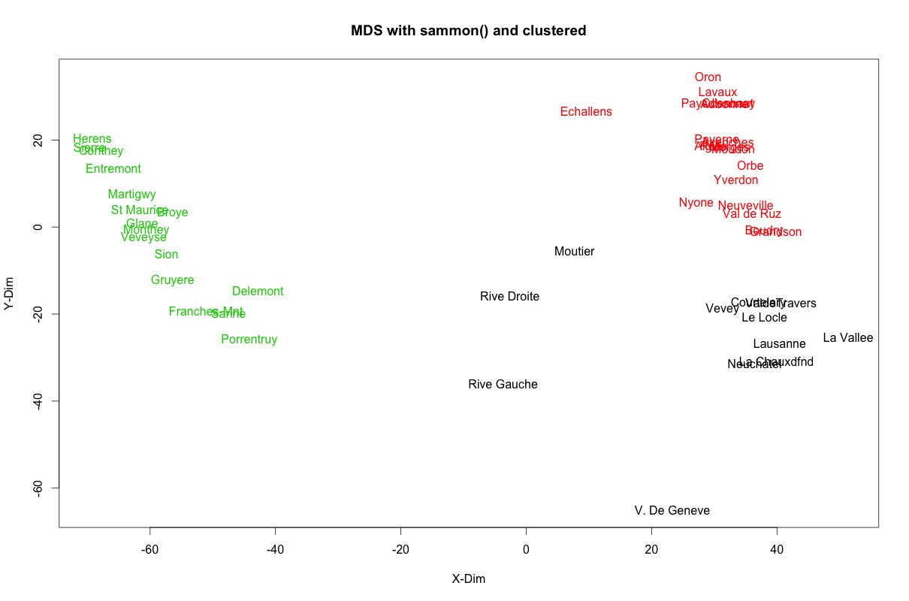

Multi-Dimensional Scaling
If you have multiple features for each observation (row) in a dataset and would like to reduce the number of features in the data so as to visualize which observations are similar, Multi Dimensional Scaling (MDS) will help.
The Advantage and Disadvantage of MDS
The advantage with MDS is that you can specify the number of dimensions you want in the output data. The disadvantage however is that it is not possible to deal with un-ordered categorical features.
How to implement MDS?
It can be easily implemented using the cmdscale() in {stats} and the isoMDS() and sammon() from {MASS} package. All these functions take the dissimilarity object of class dist as the main argument and k is the desired number of dimensions in the scaled output.
Below is the code that demonstrates these functions on swiss data that contains fertility and socio-economic data on 47 French speaking provinces in Switzerland.
head(swiss) # first 6 rows of swiss
# Fertility Agriculture Examination Education Catholic Infant.Mortality
# Courtelary 80.2 17.0 15 12 9.96 22.2
# Delemont 83.1 45.1 6 9 84.84 22.2
# Franches-Mnt 92.5 39.7 5 5 93.40 20.2
# Moutier 85.8 36.5 12 7 33.77 20.3
# Neuveville 76.9 43.5 17 15 5.16 20.6
# Porrentruy 76.1 35.3 9 7 90.57 26.61. cmdscale(): Classical MDS
d <- dist(swiss) # compute distance matrix
scaled_2 <- cmdscale(d) # perform MDS. k defaults to 2
head(scaled_2) # first 6 features
# [,1] [,2]
# Courtelary 37.032433 -17.434879
# Delemont -42.797334 -14.687668
# Franches-Mnt -51.081639 -19.274036
# Moutier 7.716707 -5.458722
# Neuveville 35.032658 5.126097
# Porrentruy -44.161953 -25.922412
scaled_3 <- cmdscale(d, k=3) # setting k=3 to get 3 features.
head(scaled_3)
#> [,1] [,2] [,3]
#> Courtelary 37.032433 -17.434879 -22.609928
#> Delemont -42.797334 -14.687668 -12.063389
#> Franches-Mnt -51.081639 -19.274036 -22.541458
#> Moutier 7.716707 -5.458722 -20.799893
#> Neuveville 35.032658 5.126097 -9.218281
#> Porrentruy -44.161953 -25.922412 -10.0452382. MASS::isoMDS(): Non-metric Multi-dimensional scaling
library(MASS)
swiss.dist <- dist(swiss)
swiss.mds <- isoMDS(swiss.dist)
head(swiss.mds$points)
#> [,1] [,2]
#> Courtelary 38.850496 -16.154674
#> Delemont -42.676573 -13.720989
#> Franches-Mnt -53.587659 -21.335763
#> Moutier 6.735536 -4.604116
#> Neuveville 35.622307 4.633972
#> Porrentruy -44.739479 -25.495702
plot(swiss.mds$points, type = "n")
text(swiss.mds$points, labels = as.character(1:nrow(swiss)))3. MASS::sammon(): Another form of non-metric MDS
library(MASS)
swiss.dist <- dist(swiss)
swiss.sam <- sammon(swiss.dist)
head(swiss.sam$points)
#> [,1] [,2]
#> Courtelary 37.032433 -17.434879
#> Delemont -42.797334 -14.687668
#> Franches-Mnt -51.081639 -19.274036
#> Moutier 7.716707 -5.458722
#> Neuveville 35.032658 5.126097
#> Porrentruy -44.161953 -25.922412Cluster with k-Means and plot
kmeans_clust <- kmeans(swiss.sam$points, 3) # k-means wihth 3 clusters.
plot(swiss.sam$points, type = "n", main="MDS with sammon() and clustered", xlab = "X-Dim", ylab="Y-Dim")
text(swiss.sam$points, labels = rownames(swiss), col = kmeans_clust$cluster) # set color using k-means output